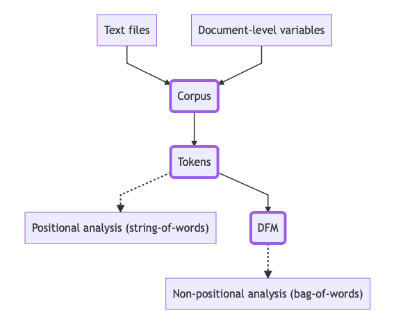

Textual Analysis in R: Quanteda 101
_

Welcome to Quanteda Tutorial 1
Learning goals: this tutorial will teach you to
- Create a text corpus
- Create a data frame matrix
- Specify meta data
- Docvars
- Docnames
- Process your textual data
- tokenisation
- stemming
- lemmatisation
- stopwords
- Plot textual data
- Analyse word frequencies
Introduction to quanteda
What is quanteda?
quanteda is an R package for managing and analyzing textual data developed by Kenneth Benoit, Kohei Watanabe, and other contributors. It is part of the Quanteda Initiative, a non-profit company aimed at advancing development and dissemination of open-source tools for text analytics.
Text analysis with quanteda goes through all those three types of objects either explicitly or implicitly.
- Corpus
- Tokens
- Document-feature matrix (dfm)
Typical workflow

Installing and loading quanteda
In this tutorial we have already installed the
quanteda package for you. When using
quanteda from your own computer you can install the
quanteda package from CRAN with:
install.packages("quanteda").
library("quanteda")
packageVersion("quanteda")Additional resources
Documentation:
Tutorials: https://tutorials.quanteda.io
Cheatsheet: https://www.rstudio.com/resources/cheatsheets/
1. Creating a text corpus
What is a text corpus?
A text corpus saves character strings and variables in a data frame, and combines texts with document-level variables.
You can create a corpus from various available sources:- A character vector
- Consists of one document per element; if the elements are named, these names will be used as document names.
- A data.frame (or a tibble tbl_df)
- The default document id is a variable identified by docid_field; the text of the document is a variable identified by text_field; and other variables are imported as document-level meta-data. This matches the format of data.frames constructed by the the readtext package.
- A kwic object constructed by kwic()
- A tm VCorpus or SimpleCorpus class object
- Fixed metadata fields imported as docvars and corpus-level metadata imported as meta information.
- A corpus object
What are the functions?
The main function for creating a corpus is corpus().
Tip:
Remember you can use? before the name of any function to
access it’s documentation Have a go here:
?corpusExample code
library(quanteda)
# create text corpus
corp <- corpus(c("A corpus is a set of documents.",
"This is the second document in the corpus."))
# print text corpus
corpPractice
Create your own corpus using three sentences, print it out to have a look, and get a summary usingsummary(your_corp).
# create text corpus
your_corp <- Extra corpus functions: docnames, docvars and meta.
docnames: A unique name assigned to each text in the corpus (in the case of our corpus above, each sentence would be one text). These can be assigned manually, obtained from existing text metadata (for eg. names of documents), or will otherwise be assigned as “text1”, “text2”, etc. automatically.
-
Assigned manually using:
docnames(x) <- value, where x = corpus to which docnames are to be assigned, and
value = a character vector of labels equal in length to the number of texts.
docvars: A data.frame of document-level variables associated with each text. For example, dates, locations, authors.
-
Assigned manually using:
docvars(x, field = NULL) <- value, where x = corpus to which docnames are to be assigned,
value = a vector of document variable values and field = a string containing the document-level variable name (eg. “Location”, “Date” etc)
meta: a named list that will be added to the corpus as corpus-level, user meta-data. This can later be accessed or updated using meta().
-
See
meta()or for more information.
Working with corpus meta-data
To read the meta-data of a corpus, usemeta() and input
your corpus name Exercise: try it yourself using in-built quanteda corpus
data_corpus_inaugural
meta(data_corpus_inaugural)How about if you want to assign meta-data to your corpus?
To assign meta-data, you also usemeta() For example:
meta(data_corpus_inaugural, "newfield") <- "This is a new field of metadata."
# now rerun `meta()` to see your new metadata field.
meta(data_corpus_inaugural)2. Tokenisation
What is tokenisation?
Tokens are a sequence of characters that are grouped together as a useful semantic unit.- Words, punctuation, numbers, symbols
- Usually, but not always, delimited by spaces
- More efficient than character strings, but preserves positions of words
Tokenization steps
- Lowercase
- “a corpus is a set of documents.”
- “This is a thrillingly constructed example.”
- Remove stopwords and punctuation
- “corpus set documents”
- “thrillingly constructed example”
- Stem
- “corpus set document”
- “thrill construct exampl”
- Tokenize
- corpus, set, document
- thrill, construct, exampl
What are the functions?
The main function for creating a corpus is tokens().
Example code
toks <- tokens(c("A corpus is a set of documents.",
"This is a thrillingly constructed example."))
toksWord stemming and stopwords
Word stems are the part of the word that carry it’s lexical meaning, and usually do not appear on their own. In linguistic terms, it is the part of a word that appears before inflectional affixes are added. For example, the word stem of the word “migration” is “migra”. This alone isn’t a word, but it is the root of many words such as “migratory”, “migrant”, “migrants”.Once you have a tokens object, you can look at the word stems of your tokens using
tokens_wordstem(), and reassign your tokens object to
include only stems.
toks <- tokens(c("A corpus is a set of documents.",
"This is a thrillingly constructed example."))
toks_stem <- tokens_wordstem(toks)
head(toks)
head(toks_stem)stopwords() returns a pre-defined list of function words
used in quanteda.
stopwords()tokens_remove(), as you can
see below.
# example
toks <- tokens(c("A corpus is a set of documents.",
"This is a thrillingly constructed example."))
toks_nostop <- tokens_remove(toks, pattern = stopwords("en"))
head(toks)
head(toks_nostop)Practice
- Create a new corpus, consisting of two texts
a) “This is my first text.”
b) “This is not my first text, this is my second text.” - Tokenise it using
tokens(corp). - Remove punctuation using ‘remove_punct = FALSE’
- Remove stopwords using
tokens_remove() - Have a look at your tokens using
head()
corp <-
toks <- tokens(corp, ...)Hint: you can use summary(toks) to see the integer value for number of tokens in each text
Extra corpus functions
Some extra parameters when tokenising your corpus include- remove_punct
- remove_symbols
- remove_numbers
- remove_url
- remove_separators
3. Creating a DFM
What is a DFM?
A DFM is a matrix of documents (rows) by “features” (columns), representing frequencies of features by document.- Features are (selected) types, possibly transformed (such as through stemming). But could also be dictionary categories.
- DFMs are sparse, in that only non-zero cells are recorded
- The most efficient structure, but it does not have information on positions of words
- Non-positional (bag-of-words) analysis are performed using many of the textstat_* and textmodel_* functions
What does a document-feature matrix look like?
- Token frequencies are listed per document
Document 1: “A corpus is a set of documents.”
Document 2: “This is the second document in the corpus.”
| corpus | set | document | second | |
|---|---|---|---|---|
| Document 1 | 1 | 1 | 1 | 0 |
| Document 2 | 1 | 0 | 1 | 1 |
| … | ||||
| Document n | 0 | 1 | 1 | 0 |
What are the functions?
The main function for creating a corpus is dfm().
Example code
Below we usedata_char_ukimmig2010, a sample dataset from
the quanteda.textmodels package.
# set up your corpus and tokenise it
corp_immig <- corpus(data_char_ukimmig2010)
toks_immig <- tokens(corp_immig)
# create your dfm
dfm_immig <- dfm(toks_immig)
dfm_immigYou can get some extra descriptive info about your dfm using
summary(dfm_immig), docnames(dfm_immig),
docvars(dfm_immig) and check for any metadata using
meta(dfm_immig)
Have a go above!
Quick recap of magrittr’s pipe operator in R
The pipe operator in R %>% takes the output of the
statement before it and uses it as the input of the statement after
it.
data_corpus_inaugural %>%
tokens()
tokens(data_corpus_inaugural)dfm(tokens(corpus(c("my corpus text."))))"my corpus text." %>%
c() %>%Practice
-
data_corpus_inauguralis a built-in quanteda dataset with the following docvars: - Year - a four-digit integer year
- President character - President’s last name
- FirstName character - President’s first name (and possibly middle initial)
- Party factor - name of the President’s political party
Source
https://archive.org/details/Inaugural-Address-Corpus-1789-2009
https://www.presidency.ucsb.edu/documents/presidential-documents-archive-guidebook/inaugural-addresses.
magittr’s pipping
operators (See the hint and solution if you get stuck!).
my_dfm <- tokens(...) %>%
...(stopwords("en")) %>%
...(language = "en") %>%
dfm()my_dfm <- tokens(data_corpus_inaugural, remove_punct = TRUE) %>%
tokens_remove(stopwords("en")) %>%
tokens_wordstem(language = "en") %>%
dfm()
summary(my_dfm)
docvars(my_dfm)Have a look at my_dfm using the summary()
function.
Use the right function to answer the following question (see Example section above for a reminder)
Analysing DFMs basics
Feature counts
Start by loading the quanteda.textstats package.library("quanteda.textstats")
packageVersion("quanteda.textstats")colSums(), which counts the features, sorts
them (decreasing or otherwise) and prints them. You can use
head(), as below, to print on the top 6 features. Alternatively, quanteda also has a built-in features frequency function
textstat_frequency(), which allows you
to specify the number of features using n = x. Try out the
two options below.
# create your dfm object from data_corpus_inaugural
my_dfm <- tokens(data_corpus_inaugural, remove_punct = TRUE) %>%
tokens_remove(stopwords("en")) %>%
tokens_wordstem(language = "en") %>%
dfm()
# using colSums
colSums(my_dfm) %>%
sort(decreasing = TRUE) %>%
head(n = 6)
# using quanteda textstat_frequency
textstat_frequency(my_dfm, n = 6)Now you have a sense of what the main recurring features are in the dfm, you might want to have a look at how these features are distributed accross the different Presidents’ speeches.
Texplots
Start by loading the quanteda.textplots and ggplot2 packages(make sure you have ggplot2 installed already using
install.packages())
library("quanteda.textplots")
library("ggplot2")
packageVersion("quanteda.textplots")
packageVersion("ggplot2")Frequency plots
Now you have a sense of what the main recurring features are in the dfm, you can visualise these in a texplot.Note: this is a ggplot object, which means you can modify the plot features using ggplot functions.
# create your dfm object from data_corpus_inaugural
my_dfm <- tokens(data_corpus_inaugural, remove_punct = TRUE) %>%
tokens_remove(stopwords("en")) %>%
tokens_wordstem(language = "en") %>%
dfm()
features_dfm_inaug <- textstat_frequency(my_dfm, n = 70)
# Sort by reverse frequency order
features_dfm_inaug$feature <- with(features_dfm_inaug, reorder(feature, -frequency))
ggplot(features_dfm_inaug, aes(x = feature, y = frequency)) +
geom_point() +
theme(axis.text.x = element_text(angle = 90, hjust = 1))Wordclouds
A second method you can use to visualise your dfm is wordclouds, which allow you to plot the top features.# create your dfm object from data_corpus_inaugural
my_dfm <- tokens(data_corpus_inaugural, remove_punct = TRUE) %>%
tokens_remove(stopwords("en")) %>%
tokens_wordstem(language = "en") %>%
dfm()
set.seed(100)
textplot_wordcloud(my_dfm)Lexical dispersion plots: plotting methods for corpus and tokens objects
Often, it is not only the frequency of words that we are interested in, but also where they appear in the text. In the case of innaugural speeches, the topics that a President chooses to begin and end their speech on can say a lot. You can plot this using a lexcial dispersion plot, which allows us to visualize the occurrences of particular terms throughout the text.To do this, you will need to start by creating a
kwic() object from your dfmkwic() returns the keywords in context, which
allows us to see how keywords are used in the actual contexts in a
concordance view produced by kwic(). Have a look at the keyword
‘immigration’ in context below.Note:
kwic() takes
a character, corpus or tokens object as it’s argument.
# create your tokens object from data_corpus_inaugural
toks <- tokens(data_corpus_inaugural, remove_punct = TRUE) %>%
tokens_remove(stopwords("en")) %>%
tokens_wordstem(language = "en")
kw_immig <- kwic(toks, pattern = "immig*")
head(kw_immig, 10)Now you have had a look at some keywords in context, you can plot
them on a lexcial dispersion plot. In this case, we first subset the
corpus so that we see the keywords in context for inaugural Presidential
speeches from 1949 onwards only.
Practice
Exercise:1. Fill in the “…” space to choose a keyword you are interested in, remember you can use stem words followed by an asterisk (this will include all words derived form that stem)
2. Add another kwic() object, and specify another word of your choice.
# create your tokens object from data_corpus_inaugural
data_corpus_inaugural_subset <-
corpus_subset(data_corpus_inaugural, Year > 1949)
textplot_xray(
kwic(tokens(data_corpus_inaugural_subset), pattern = "God"),
kwic(tokens(data_corpus_inaugural_subset), pattern = "...")
)Notice anything interesting about the lexical dispersion of the word ‘God’…?
What does this tell you about the context in which Presidents from 1949 until today mention God in their inaugural speeches?
Project: Plotting textual data
Now you have a feel of how to do some text analysis, have a go at doing it yourself on your own computer! Follow the instructions below using RStudio on your own computer.
German Chancellor Speeches: about the dataset
Your task will be use German Chancellor Speeches to see how many times different words appear in speeches made by German Chancellors Gerhard Schröder and Angela Merkel, using a texplot.- Access and read the dataset in as a .txt file from a folder on your computer
- Create better docnames for the dataset by pasting “Year” and “Chancellor”
- Select speeches by Gerhard Schröder and Angela Merkel.
- Check ?textplot_xray().
- Choose words that might only appear in some of the speeches.
Project
1. Write the code to read in .txt files from a folder on your computer
-
a. Set up a RProj in a new folder.
-
See ‘Using
RStudio Projects’ for help on how to set these up and learn about
when they are used._
-
See ‘Using
RStudio Projects’ for help on how to set these up and learn about
when they are used._
-
b. Download ZIP file with inaugural
speeches by German chancellors
-
c. Copy the folder into your RProj folder.
- d. Open up an R script (File -> New File -> R Script) to work in.
-
Make sure to install and load quanteda and the other
packages you will be using such as readtext, as you
have done in your exercises above, using
install.packages()andlibrary("quanteda") -
e. Import all text files using
readtext().- See here for some instruction on how to use the readtext package.
-
f. Create a text corpus of this data
frame.
2. Create better docnames by pasting “Year” and
“Chancellor”, and seperating with “_“.
-
Hint: You can access particular features from your
dfm’s docvars by specifying their name in
docvars(), for exampledocvars(data_corpus_inaugural_ger, "Year").
-
Paste
allows you to reassign new docnames to
docnames(data_corpus_inaugural_ger)by concatenating vectorsdocvars(data_corpus_inaugural_ger, "Year")anddocvars(data_corpus_inaugural_ger, "Chancellor"), and specifying a seperator using thesep=""argument.
-
Paste
allows you to reassign new docnames to
3. Select speeches by Gerhard Schröder and Angela Merkel.
-
Hint: You can do this using
corpus_subset(). Have a look back at how we used it earlier when creating our lexical dispersion plot for inaugural speeches from 1949 onwards. For more help, remember?corpus_subsetwill show you the documentation for this function.
4. Load the quanteda.textplots package.
- Hint: Check ?textplot_xray().
5. Produce a textplot xray using words that might only appear in
some of the speeches, similarly to above.
- Optional: Start with the stem words “Arbeits*”, “Arbeitslos*”, “Migration”
6. Now have a look at your textplot!
# Click hint above to get some help (click on to see the solution if you get really stuck)# Replace '...' with correct input
docnames(...) <- paste(
docvars(..., "..."),
docvars(..., "..."),
sep = ", ")
# Replace '...' with correct input
toks_schroeder_merkel <- ... %>%
corpus_subset(... %in% c("...", "...")) %>%
tokens()
# Load the quanteda.textplots library
# Produce textplot
plot_xray <- textplot_xray(
kwic(..., "...*"),
kwic(..., "...*"),
kwic(..., "...*"))
# Now have a look at your textplot# Edit docnames
docnames(data_corpus_inaugural_ger) <- paste(
docvars(data_corpus_inaugural_ger, "Year"),
docvars(data_corpus_inaugural_ger, "Chancellor"),
sep = ", ")
# Select speeches
toks_schroeder_merkel <- data_corpus_inaugural_ger %>%
corpus_subset(Chancellor %in% c("Merkel", "Schroeder")) %>%
tokens()
# Load the quanteda.textplots library
library("quanteda.textplots")
# Produce textplot
plot_xray <- textplot_xray(
kwic(toks_schroeder_merkel, "Arbeits*"),
kwic(toks_schroeder_merkel, "Arbeitslos*"),
kwic(toks_schroeder_merkel, "Migration*")
)
# Now have a look at your textplot
plot_xrayFor more on analysis, see the Quanteda 102 tutorial.
Congratulations! You’ve completed Tutorial 1: Quanteda!
Let us know what you thought about the tutorial, we’d love to hear your thoughts!
- Text box that automatically deposits responses in certain location?